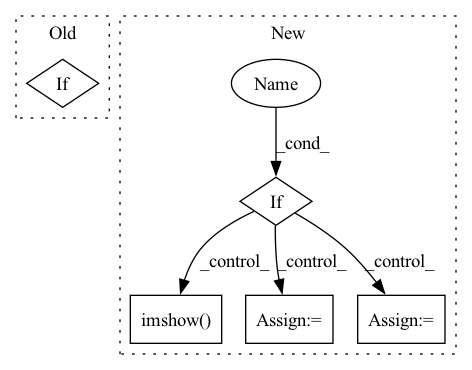

Pattern ID :33261
Before Change
if transform is None:
self.transform = self.get_train_transform(shape)
if mode == "train":
if download:
train_path = os.path.join(
root, tag, "chest_xray", "train")After Change
super(ChestXrayDataset, self).__init__(
root=dataset_path, transform=self.transform)
if show :
loader = DataLoader(self, batch_size=show, shuffle=True)
inputs, classes = next(iter(loader))
class_names = self.classes
out = torchvision.utils.make_grid(inputs)
self.imshow( out, title=[class_names[x] for x in classes])
def __getitem__(self, index):
path, target = self.samples[index]
sample = self.loader(path)In pattern: SUPERPATTERN
Frequency: 3
Non-data size: 5
Instances Fragment ID: 96003641
Project Name: tuttelikz/farabio
Commit Name: bd0374049d13c5b0d7cad83da095e2cbc01725d2
Time: 2021-07-29
Author: s.askaruly@gmail.com
File Name: farabio/data/biodatasets.py
M Class Name: ChestXrayDataset
N Class Name: ChestXrayDataset
M Method Name: __init__(8)
N Method Name: __init__(7)
M Parent Class: ImageFolder
N Parent Class: ImageFolder
M File Name: farabio/data/biodatasets.py
N File Name: farabio/data/biodatasets.py
M Start Line: 101
M End Line: 144
N Start Line: 100
N End Line: 131
Before Change
super(ChestXrayDataset, self).__init__(
root=train_path, transform=self.transform)
elif After Change
super(ChestXrayDataset, self).__init__(
root=dataset_path, transform=self.transform)
if show :
loader = DataLoader(self, batch_size=show, shuffle=True)
inputs, classes = next(iter(loader))
class_names = self.classes
out = torchvision.utils.make_grid(inputs)
self.imshow( out, title=[class_names[x] for x in classes])
def __getitem__(self, index):
path, target = self.samples[index]
sample = self.loader(path) Fragment ID: 96003771
Project Name: tuttelikz/farabio
Commit Name: f1d17ab62f7226de3ebd472422d38aa48b177fc3
Time: 2021-07-27
Author: s.askaruly@gmail.com
File Name: farabio/data/biodatasets.py
M Class Name: ChestXrayDataset
N Class Name: ChestXrayDataset
M Method Name: __init__(8)
N Method Name: __init__(7)
M Parent Class: ImageFolder
N Parent Class: ImageFolder
M File Name: farabio/data/biodatasets.py
N File Name: farabio/data/biodatasets.py
M Start Line: 101
M End Line: 144
N Start Line: 100
N End Line: 131
Before Change
if tp:
cv2.rectangle(img, (bb[0], bb[1]), (bb[2], bb[3]), (0, 1, 0)) // tp
fig.suptitle(cls + "_tp_"+ str(conf))
elif After Change
fig.suptitle(cls + "_tp_"+ str(conf))
plt.imshow(img)
plt.show()
elif = plt.figure()
cv2.rectangle(img, (bb[0], bb[1]), (bb[2], bb[3]), (1, 0, 0)) // fp
fig.suptitle(cls + "_repeated_" + str(conf))
plt.imshow( img)
plt.show()
else: // difficult
pass
fig = plt.figure()
cv2.rectangle(img, (bb[0], bb[1]), (bb[2], bb[3]), (0, 1, 0)) // fp
fig.suptitle(cls + "_difficult_" + str(conf))
plt.imshow(img) Fragment ID: 96003729
Project Name: ze-yang/context-transformer
Commit Name: cd60ca6b05edb2e3892a65e7c78de2d7956b8101
Time: 2019-05-20
Author: 981435961@qq.com
File Name: data/voc_eval.py
M Class Name: AnonimousClass
N Class Name: AnonimousClass
M Method Name: det_visualize(8)
N Method Name: det_visualize(8)
M Parent Class:
N Parent Class:
M File Name: data/voc_eval.py
N File Name: data/voc_eval.py
M Start Line: 225
M End Line: 245
N Start Line: 249
N End Line: 284